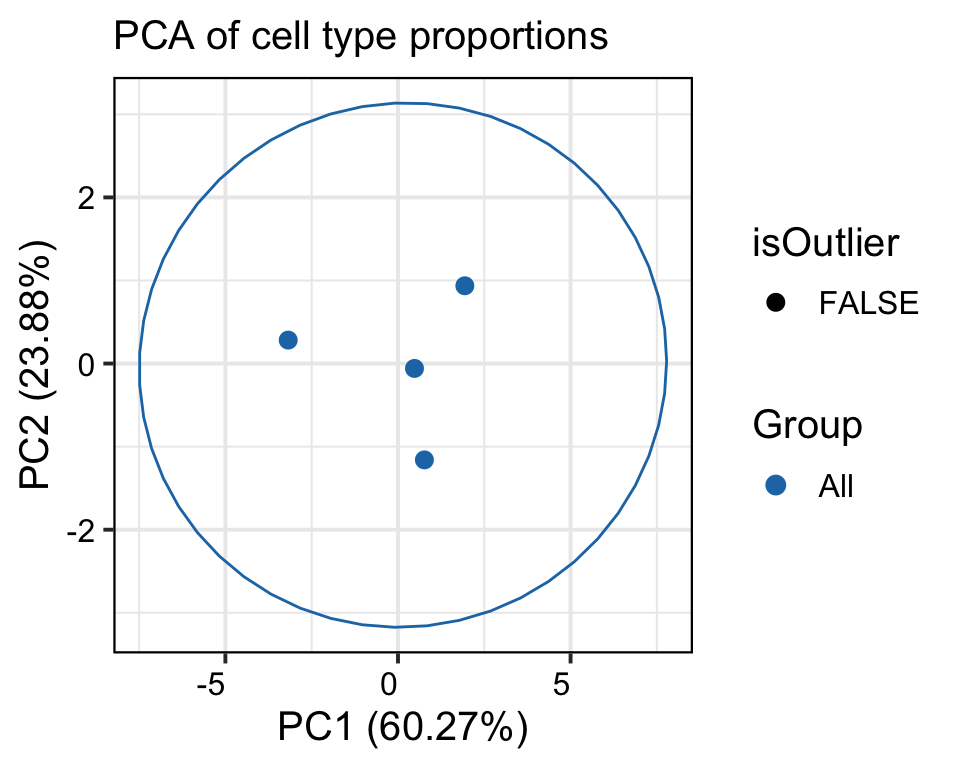
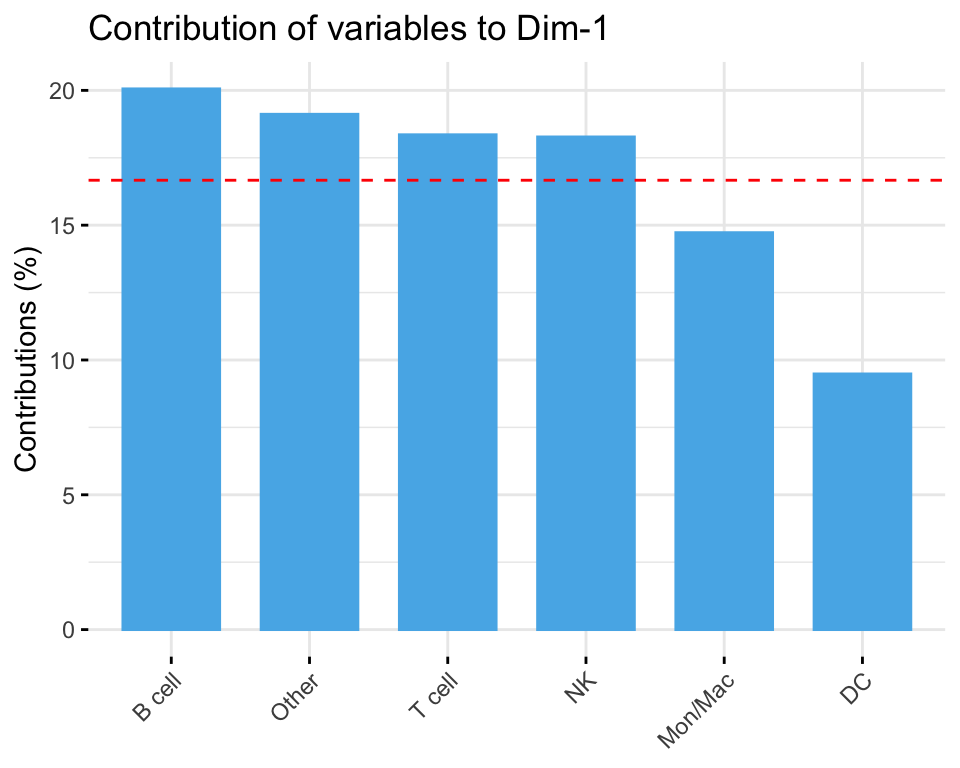
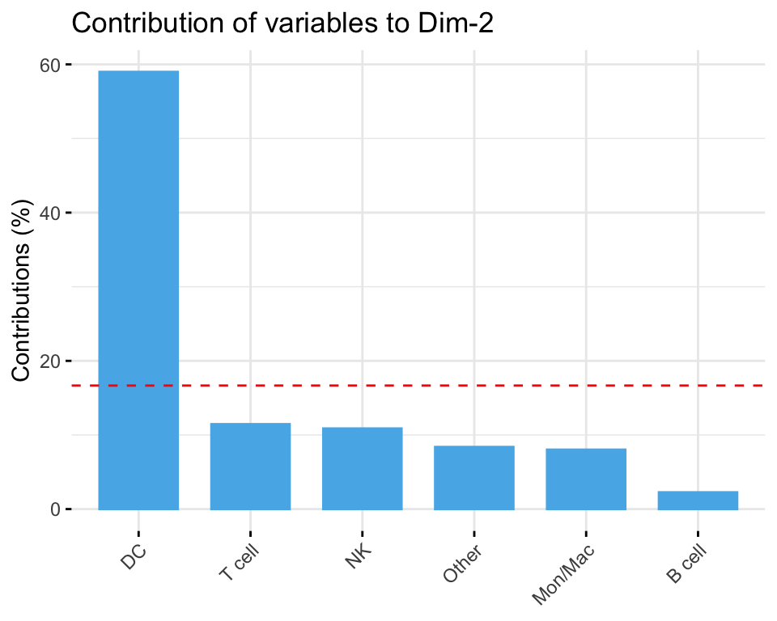
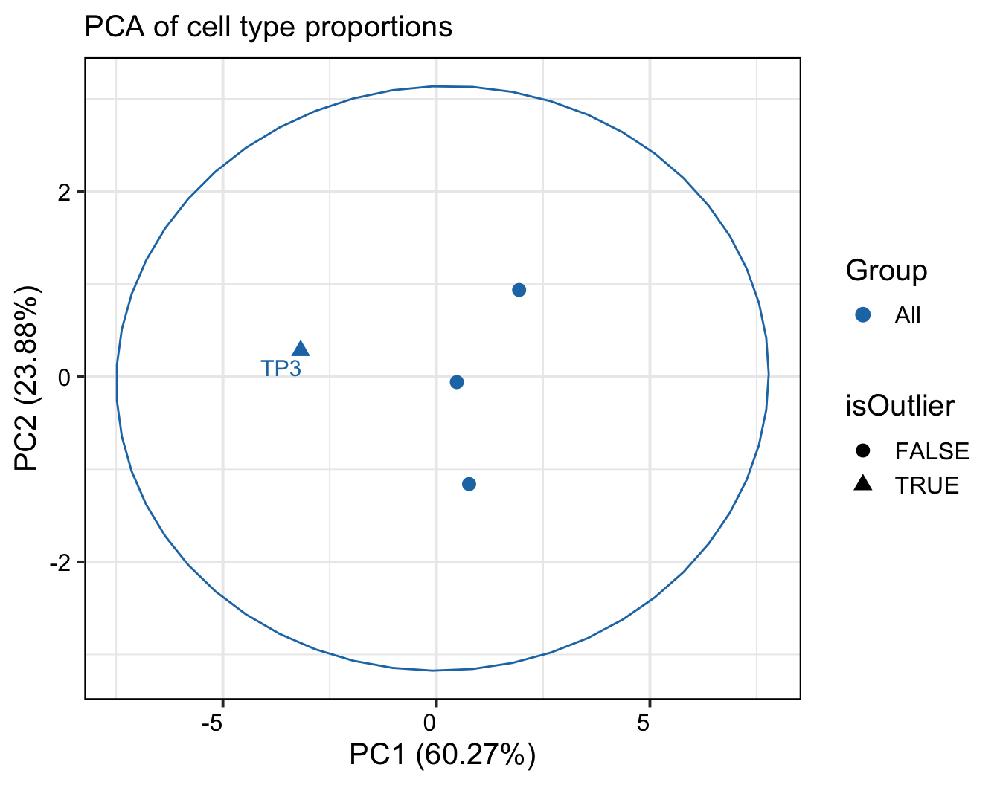
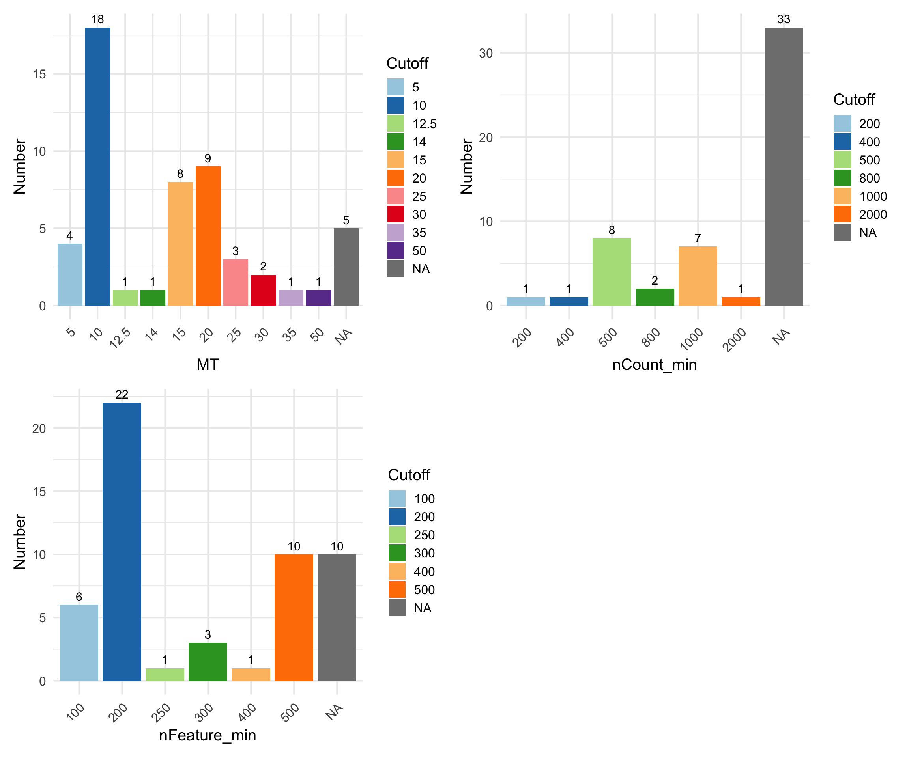
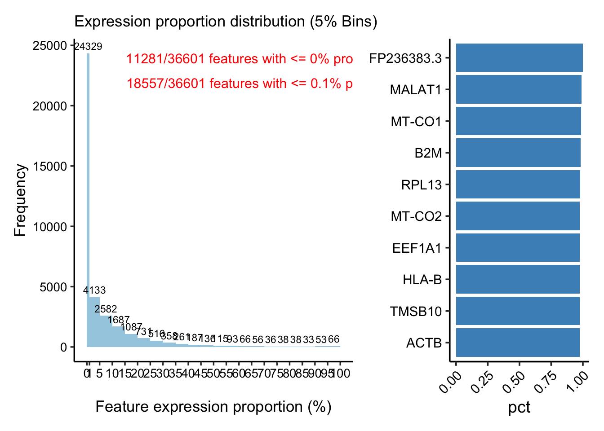
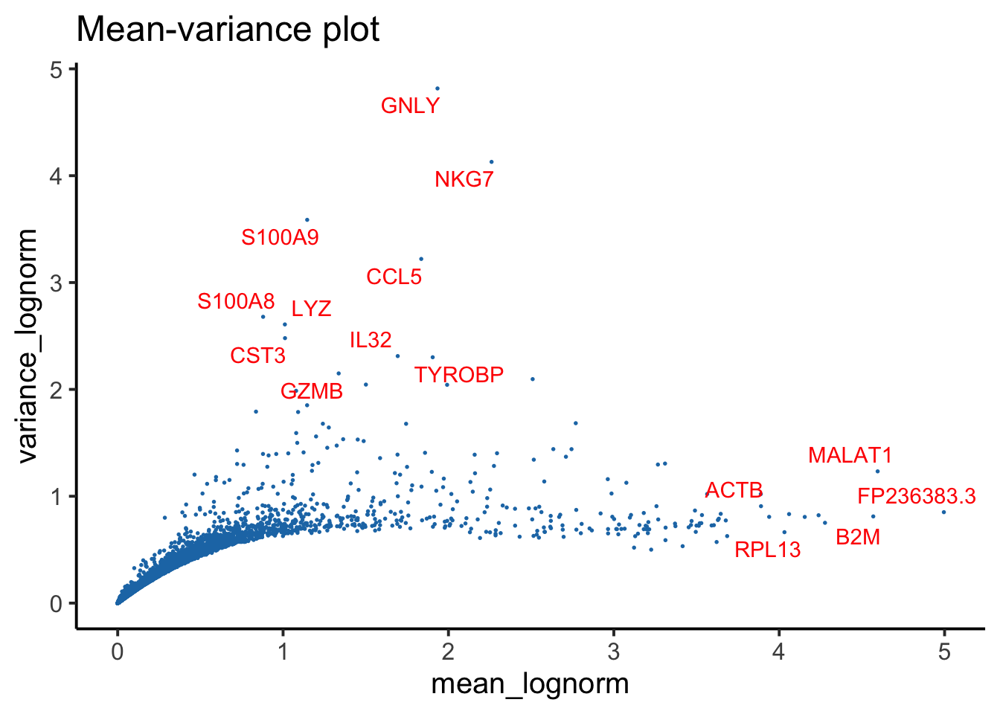
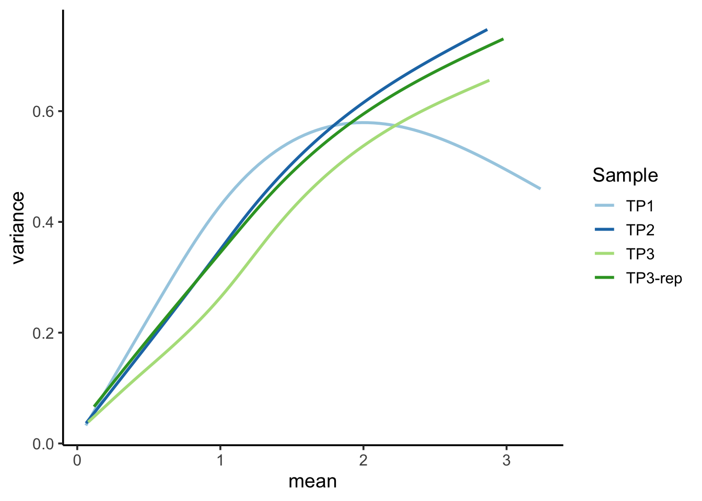

library(BPCells)
library(SingleCellMQC)1 Dataset 1 (PBMC 28K cells) tutorial
1.1 Data import
SingleCellMQC streamlines the import of single-cell multi-omics datasets and associated clinical metadata through a comprehensive suite of loading functions. The package natively supports:
- Single-cell RNA-seq (scRNA-seq)
- CITE-seq (paired RNA + ADT profiling)
- TCR/BCR repertoire sequencing (scTCR-seq/scBCR-seq)
Upon loading, gene expression (GEX) data are automatically structured as a Seurat object. For enhanced memory efficiency when working with large datasets, we recommend leveraging the BPCells package for disk-backed operations, which is fully integrated with our data loading utilities. The examples provided here demonstrate data loading in the standard mode.
Data download
Dataset 1: an in-house single-cell multi-omics dataset generated using the 10x Genomics Chromium 5’ Gene Expression platform, which included matched scRNA-seq, surface proteomics (antibody-derived tags, ADTs), and TCR/BCR sequencing across four peripheral blood mononuclear cells (PBMC) samples (totaling 28,498 cells). Three samples (TP1, TP2, and TP3) were collected from the same donor at three-day intervals, and one sample (TP3) that failed initial QC was re-measured (TP3-rep). Example PBMC single-cell multi-omics data can be downloaded from the URL:https://doi.org/10.5281/zenodo.15120930.
1.1.1 Load data of multi-omics (scRNA-seq/CITE-seq + scV(D)J-seq)
Upon standard Cell Ranger pipeline, you will have a lot of output files. The input directory (scRNA-seq or CITE-seq) barcodes.tsv.gz, features.tsv.gz and matrix.mtx.gz should contained. If your cell×gene expression matrix data is stored in HDF5 file format, use Read10XH5Data instead. The input file (scV(D)J-seq) filtered_contig_annotations.csv also should be contained.
sample_filtered_feature_bc_matrix/
├── barcodes.tsv.gz
├── features.tsv.gz
└── matrix.mtx.gz
vdj_out/
├── filtered_contig_annotations.csv <– This contains the count data we want!
├── clonotypes.csv
└── …
# A vector of outputs of the Cell Ranger pipeline from 10X
dir_GEX <- c(
"/data/SingleCellMQC/CellRanger/TP1/sample_filtered_feature_bc_matrix/",
"/data/SingleCellMQC/CellRanger/TP2/sample_filtered_feature_bc_matrix/",
"/data/SingleCellMQC/CellRanger/TP3/sample_filtered_feature_bc_matrix/",
"/data/SingleCellMQC/CellRanger/TP3-rep/sample_filtered_feature_bc_matrix/"
)
dir_TCR <- c(
"/data/SingleCellMQC/CellRanger/TP1/vdj_t/filtered_contig_annotations.csv",
"/data/SingleCellMQC/CellRanger/TP2/vdj_t/filtered_contig_annotations.csv",
"/data/SingleCellMQC/CellRanger/TP3/vdj_t/filtered_contig_annotations.csv",
"/data/SingleCellMQC/CellRanger/TP3-rep/vdj_t/filtered_contig_annotations.csv"
)
dir_BCR <- c(
"/data/SingleCellMQC/CellRanger/TP1/vdj_b/filtered_contig_annotations.csv",
"/data/SingleCellMQC/CellRanger/TP2/vdj_b/filtered_contig_annotations.csv",
"/data/SingleCellMQC/CellRanger/TP3/vdj_b/filtered_contig_annotations.csv",
"/data/SingleCellMQC/CellRanger/TP3-rep/vdj_b/filtered_contig_annotations.csv"
)
sample_name <- c("TP1", "TP2", "TP3", "TP3-rep")
pbmc <- Read10XData(dir_GEX = dir_GEX, dir_TCR = dir_TCR, dir_BCR = dir_BCR, sample = sample_name)
VDJ_raw = Read10XData(dir_TCR = dir_TCR, dir_BCR = dir_BCR, sample = sample_name)
pbmc
# Show the size of the subject
print(object.size(pbmc), units = "auto") What if you want to implement more memory-efficient workflows by BPCells-based data reading?
# A vector of outputs of the Cell Ranger pipeline from 10X
dir_GEX <- c(
"/data/SingleCellMQC/CellRanger/TP1/sample_filtered_feature_bc_matrix/",
"/data/SingleCellMQC/CellRanger/TP2/sample_filtered_feature_bc_matrix/",
"/data/SingleCellMQC/CellRanger/TP3/sample_filtered_feature_bc_matrix/",
"/data/SingleCellMQC/CellRanger/TP3-rep/sample_filtered_feature_bc_matrix/"
)
dir_TCR <- c(
"/data/SingleCellMQC/CellRanger/TP1/vdj_t/filtered_contig_annotations.csv",
"/data/SingleCellMQC/CellRanger/TP2/vdj_t/filtered_contig_annotations.csv",
"/data/SingleCellMQC/CellRanger/TP3/vdj_t/filtered_contig_annotations.csv",
"/data/SingleCellMQC/CellRanger/TP3-rep/vdj_t/filtered_contig_annotations.csv"
)
dir_BCR <- c(
"/data/SingleCellMQC/CellRanger/TP1/vdj_b/filtered_contig_annotations.csv",
"/data/SingleCellMQC/CellRanger/TP2/vdj_b/filtered_contig_annotations.csv",
"/data/SingleCellMQC/CellRanger/TP3/vdj_b/filtered_contig_annotations.csv",
"/data/SingleCellMQC/CellRanger/TP3-rep/vdj_b/filtered_contig_annotations.csv"
)
sample_name <- c("TP1", "TP2", "TP3", "TP3-rep")
pbmc <- Read10xData(dir_GEX = dir_GEX, dir_TCR = dir_TCR, dir_BCR = dir_BCR,
sample = sample_name, dir_BPCells = "/data/SingleCellMQC/BPCells")
pbmc
# Show the size of the subject
print(object.size(pbmc), units = "auto") 1.2 Preprocessing before QC
1.2.1 Metrics calculation
SingleCellMQC simplifies the process of calculating multi-omics metrics for sample quality control, enabling researchers to efficiently assess data quality before proceeding with downstream analysis. It offers a comprehensive suite of QC metrics designed to evaluate single-cell data quality at the sample level, covering diverse modalities such as RNA sequencing, surface protein profiling (ADT), and TCR/BCR sequencing.
# Calculate the information of QC metrics.
pbmc <- CalculateMetrics(pbmc)1.2.2 Add 10X metrics and clinical information of samples
1.2.2.1 Add 10X metrics
Upon standard Cell Ranger pipeline, you will obtain a summary of key sequencing and analysis metrics for single-cell experiments. To integrate it into your single-cell object, follow the steps below. (Ensure that it has been turned into a single-cell object using CalculateMetrics). The input file metrics_summary.csv should be contained.
seq_list <- c("/data/SingleCellMQC/CellRanger/TP1/metrics_summary.csv",
"/data/SingleCellMQC/CellRanger/TP2/metrics_summary.csv",
"/data/SingleCellMQC/CellRanger/TP3/metrics_summary.csv",
"/data/SingleCellMQC/CellRanger/TP3-rep/metrics_summary.csv")
sample_name <- c("TP1", "TP2", "TP3", "TP3-rep")
names(seq_list) <- sample_name
seq_metrics <- Read10XMetrics(file_path = seq_list)
pbmc <- Add10XMetrics(pbmc, seq_metrics)1.2.2.2 Add information of samples
You can add other information of your samples using AddSampleMeta. The information would be store into pbmc@metadata.
sample_information <- data.frame(
Sample = c("TP1", "TP2", "TP3", "TP3-rep"),
Batch_EXP = c("EXP-1", "EXP-2", "EXP-3", "EXP-4"),
Batch_TotalSeq_C_Antibodies = c("AB-1", "AB-1", "AB-1", "AB-2"),
Sex = c("Male", "Male", "Male", "Male"),
Time_point = c("TP-1", "TP-2", "TP-3", "TP-3")
)
pbmc <- AddSampleMeta(pbmc, merge_by_seurat="orig.ident", SampleMeta= sample_information,
merge_by_meta = "Sample")1.2.3 Sctype main clusters annotation (only for qc)
It contains T cells, B cells, NK cells, DC cells, Mon / Mac cells, endothelial cells, fibroblasts, granulocytes and other cells (erythrocytes, epithelial cells, etc.).
Important
This automated annotation provides a sufficient general overview for an initial quality control assessment of your samples. However, for in-depth biological analysis requiring high precision, it is strongly recommended to perform detailed manual cell type annotation, as the accuracy of automated methods can be limited.
# For each sample, the cells were annotated separately.
pbmc <- RunScType(pbmc, split.by="orig.ident")
# The results are stored in the ScType column of meta.data
table(pbmc@meta.data$ScType)##
## B cell DC Mon/Mac NK Other T cell
## 3433 461 5651 5052 2525 11376Based on the results of this automatic cell annotation, users can gain an initial understanding of the proportionate distribution of major cell types within each sample. This overview aids in quickly identifying any significant deviations or unexpected cellular compositions.
# interactive table
PlotSampleCellTypePCT(pbmc, sample.by = "orig.ident", celltype.by = "ScType", return.type="interactive_table")CellType% per Sample
1.3 Cell-type% outlier sample detection
1.3.1 Tissue-specific reference-based warning sample detection
This section provides a summary of the common range outliers based on cell type composition. Outlier samples can be identified by comparing their cell type composition with our established reference cell type composition ranges when performing the FindCommonPCTOutlier function. The reference cell type composition ranges are established based on the 2299 single cell samples from DISCO database.
For each sample, the proportion of each cell type was compared against the defined range (minimum to maximum) in the reference database. A sample was labeled as a ‘warning’, if outliers were detected in at least three distinct cell types. In addition to the built-in reference ranges, users can also provide custom expected cell type composition ranges through the ‘custom_ref_range’ parameter.
ShowCommonPCTTissue() [1] "blood" "bone" "bone_marrow" "breast" "intestine"
[6] "kidney" "liver" "lung" "pancreas" "skin" FindCommonPCTOutlier() can be used to determine if the sample is out of scale with the database and output the outlier sample.
FindCommonPCTOutlier(pbmc, tissue = "blood", return.type = "interactive_table", celltype.by = "ScType")
## T cell outlier samples:TP3
## B cell outlier samples:TP3
## Other outlier samples:TP2,TP3
## Note: 1 warning samples (celltype% outliers >= 3 ): TP3Common range outlier results
1.3.2 PCA-based outlier sample detection analysis
For outlier detection, SingleCellMQC performed two approaches: (i) analysis via 95% confidence ellipses derived from the PCA projection, where samples falling outside these confidence boundaries were flagged as potential outliers, and (ii) density-based spatial clustering (DBSCAN algorithm via ‘dbscan’ function in dbscan package) to identify samples exhibiting anomalous clustering patterns in the PCA space.
Flag samples with unusual proportions of cell types within sample groups:confidence ellipse
# Identify outliers using the confidence ellipse
# Use return.type to specify the type of output, including table, plot and interactive table
out <- FindInterSamplePCTOutlier(pbmc, method = "ellipse", confidence_level = 0.95, return.type = "plot")
## Outlier samples:
# PCA plot
out$pca
# contributions of cell type compositions to PCs
out$contrib_pc1
out$contrib_pc2
DBSCAN
out <- FindInterSamplePCTOutlier(pbmc, method = "dbscan", return.type = "plot")
## Outlier samples: TP3
# PCA plot
out$pca
# interactive table
out <- FindInterSamplePCTOutlier(pbmc, celltype.by = "ScType", sample.by = "orig.ident", return.type="interactive_table")
## Outlier samples:
# Cell PCT Outlier results are shown in the out$outlier.
out$outlierCell PCT Outlier results
# Countribution of groups to PCs are shown in the out$contribution.
out$contributionContribution of groups to PCs
1.4 Sex verification
To avoid potential recording mistakes and data transmission errors, checking whether the file labeling is consistent with analyzed data features is necessary at the beginning of sample QC. By default, you can check if your sample gender information is incorrectly labeled. In addition, if your sample does not have gender information, you can get it according to the table below. Use PlotSampleLabel() to visualise the percentage of gene expression, with gender-related genes set as the default.
# interactive table
out<-PlotSampleLabel(pbmc, return.type = "interactive_table" )
outThe pct of features
It is possible to customise the gender-related genes to be analysed, e.g. “Female=‘XIST’, Male=c(‘DDX3Y’, ‘UTY’)”,store them with the “feature_list”.
Note
In this dataset, the predicted biological sex is fully consistent with the reported metadata (all samples are male). This alignment confirms the accuracy of the sample labeling and ensures no sample swaps occurred.
1.5 Low quality cells detection
Important
Doublet detection must be performed per-sample or per-batch. Use the split.by argument to ensure individual sample processing.
1.5.1 Data-driven methods
MAD: You can use SingleCellMQC to automatically identify low-quality cells by calculating outliers for RNA metrics (nCount_RNA, nFeature_RNA, percent.mt) and ADT metrics (nCount_ADT, nFeature_ADT, percent.isotype) using the Median Absolute Deviation (MAD) method. It based on
scater::isOutlierfunction. Notably, most surface protein panels are related to immune cells. When the sample being studied is a tissue that contains a large number of non-immune cells, or when the surface protein panels do not cover the majority of cell types, relying on ADT-based filtering alone may lead to excessive exclusion of cells that simply do not express the specific proteins.ddqc: The ddqc method is another publicly available tool. You can turn to reference and github link for more detailed information.
miQC: Other publicly available tools for low-quality cells detection are integrated in this part. The miQC method is one of them. You can turn to reference and github link for more detailed information.
Note
Note on miQC: In our practical experience, miQC occasionally encounters difficulties in predicting outliers for certain individual samples. Users have the flexibility to decide whether to include this method.
## `split.by` can be set to sample or batch information, etc., to explore the number of low-quality cells detected in different groups.
## The `nmads` parameter is usually set to 3.
pbmc <- RunLQ_MAD(pbmc, split.by = "orig.ident", nmads = 3)
## `split.by` can be set to sample, etc.
pbmc <- RunLQ_ddqc(pbmc, split.by = "orig.ident")
## `split.by` can be set to sample, etc.
pbmc <- RunLQ_miQC(pbmc, split.by = "orig.ident")1.5.2 Fixed cutoff method
The common fixed cutoffs for filtering low-quality cells commonly are defined by either visually inspecting barplots or density plots (for manual threshold selection) or adopting empirical values from high-impact studies.
Before choosing a suitable cutoff, you can use GetMetricsRange to obtain the commonly used cutoff for the corresponding tissue. The cutoffs for each QC parameter was obtained by 240 single-cell studies spanning 11 human tissues. Here, we take “blood” as an example.
suppressMessages(library(patchwork))
cutoff_plot <- GetMetricsRange(tissue = "blood")
cutoff_plot$MT + cutoff_plot$nCount_min + cutoff_plot$nFeature_min + plot_layout(ncol = 2)
From the plot above, we can observe that for blood tissue, the most frequently used percent.mt cutoff is 10%, while nCount_RNA is typically 500, and nFeature_RNA is commonly 200.
To visualize the specific distribution of these metrics within your dataset, violin plots are useful. However, with a large number of samples, these plots can become cluttered. In such cases, interactive tables can provide a more digestible overview of data quartiles and distributions.
# show plot
PlotCellMetrics(pbmc, group.by = "orig.ident", metrics = "percent.mt", log.y=F)
# Show interactive table.
out<-PlotSampleMetrics(pbmc, type="summary", metrics=c("percent.mt"), return.type = "interactive_table", csv.name = "mt" )
out$baseMetrics
Note
In this example, we select fixed cutoffs of percent.mt = 10, nCount_RNA = 500, and nFeature_RNA = 200. It is crucial to note that this approach involves a degree of subjectivity. Users should exercise their judgment and experience to define appropriate custom cutoffs based on their specific experimental context and data characteristics.
pbmc <- RunLQ_fixed(pbmc, min.nFeature_RNA = 200, percent.mt = 10, min.nCount_RNA=500)1.5.3 VDJ method (if available)
Important
SingleCellMQC infers the receptor subtype for each cell from the V(D)J data using the CalculateMetricsPerCell function. A cell was flagged as a low-quality cell when it only contained single chain.
However, due to inherent dropout rates in V(D)J sequencing technologies, we do not recommend filtering cells based on this metric alone. Instead, we suggest running this step to assess total count of such cells to better understand your data quality.
pbmc <- RunLQ_VDJ(pbmc)1.5.4 Some results visualization
1.5.4.1 Cell filtration percentage
int_table = PlotCellMethodFiltration(pbmc, type.detection = "lq", sample.by = "orig.ident", return.type= "interactive_table")
int_table$countLow quality cell filtered number
int_table$pctLow quality cell filtered percentage
1.5.4.2 Upset plot
PlotCellMethodUpset(pbmc, type.detection = "lq")
1.5.4.3 Scatter
out_plot = PlotCellMetricsScatter(pbmc, group.by = "lq_fixed", metrics.by = c("percent.mt", "nCount_RNA"), split.by = "orig.ident" )
## Registered S3 method overwritten by 'ggside':
## method from
## +.gg ggplot2
## show TP3-rep
out_plot$`TP3-rep`
1.6 Doublets Detection
1.6.1 RNA-based Methods
Important
Doublet detection must be performed per-sample. Use the
split.byargument to ensure individual sample processing.Regarding method selection, our benchmarks indicate that
scDblFindergenerally exhibits superior performance. Notably, in our implementation, we’ve setdo.topscore = TRUEforscDblFinder. This deviates from the original method by identifying a top percentage of cells as doublets, based on an expected doublet rate (e.g., per 1000 cells), rather than relying solely onscDblFinder’s default internal thresholding. Users wishing to employ the originalscDblFindermethodology should setdo.topscore = FALSE.
# The `split.by` parameter must refer to your sample.
pbmc <- RunDbt_scDblFinder(pbmc, split.by = "orig.ident", do.topscore = T)
pbmc <- RunDbt_cxds(pbmc, split.by = "orig.ident")
pbmc <- RunDbt_bcds(pbmc, split.by = "orig.ident")
pbmc <- RunDbt_hybrid(pbmc, split.by = "orig.ident")
pbmc <- RunDbt_DoubletFinder(pbmc, split.by = "orig.ident")table(pbmc$db_scDblFinder, pbmc$orig.ident)
##
## TP1 TP2 TP3 TP3-rep
## Fail 821 657 109 251
## Pass 9315 8406 3588 5351
head(pbmc$db_scDblFinder_score)
## TP1_AAACCTGAGAATGTTG-1 TP1_AAACCTGAGCCCTAAT-1 TP1_AAACCTGAGGACTGGT-1
## 0.0060459864 0.9996028543 0.0016912580
## TP1_AAACCTGCAAGCGATG-1 TP1_AAACCTGCAATGGAGC-1 TP1_AAACCTGCACAGTCGC-1
## 0.0008436530 0.9318320155 0.0001187744To aid in method selection, SingleCellMQC evaluates the influence of doublet removal on clustering performance using five metrics: Average Silhouette Width (ASW), Calinski-Harabasz index (CH), Davies-Bouldin Index (DBI), Adjusted Rand Index (ARI), and Normalized Mutual Information (NMI).
Important
It is crucial to note that this step is very time-consuming and should be considered an auxiliary strategy rather than a mandatory one. Users who do not require this evaluation can opt to skip this step.
pbmc_bench_out <- RunBenchmarkDoublet(pbmc, split.by = "orig.ident",
method_columns =c("db_scDblFinder", "db_cxds", "db_bcds","db_hybrid", "db_DoubletFinder") )PlotBenchmarkDoublet(pbmc_bench_out)$plot
Note
The scDbFinder method achieved the highest overall ranking (3 rank 1), outperforming other methods in Dataset 1.
1.6.2 VDJ methods (if need)
A cell was flagged as a doublet when: (i) it contained at least one BCR chain (IGH, IGK, or IGL) and at least one TCR chain (TRA or TRB); or (ii) it contained at least two immunoglobulin heavy chains (IGH); or (iii) it contained at least two light chains (IGK/IGL); or (iv) it contained at least two T-cell receptor α chains (TRA); or (v) it contained at least two β chains (TRB).
pbmc <- RunDbt_VDJ(pbmc)1.6.3 ADT methods (if need)
The ADT-based strategy can identify heterotypic doublets by analyzing mutually exclusive surface markers in ADT sequencing. This ADT-based method calculates positive expression thresholds for each surface protein. Cells with both expressions of exclusive paired surface markers were considered as doublets (Details see our manuscript). Users can customize exclusive surface marker pairs to target specific cell types based on their experiment needs, such as CD19 and CD3, which differentiate B and T cells. Here we take CD20/CD3 and CD19/CD3 as examples.
pbmc <- RunDbt_ADT(pbmc, split.by = "orig.ident", feature1 = c("Hu.CD20-2H7","Hu.CD19"), feature2 = c("Hu.CD3-UCHT1","Hu.CD3-UCHT1"))1.6.4 Some results visualization
1.6.4.1 Upset plot
PlotCellMethodUpset(pbmc, type.detection = "db")
Note
Many doublets detected by ADT- or V(D)J-based methods were missed by RNA-based methods, indicating the importance of integrating modality-specific QC methods for comprehensive doublet detection.
1.6.4.2 Cell filtration percentage
int_table = PlotCellMethodFiltration(pbmc, type.detection = "db", sample.by = "orig.ident", return.type= "interactive_table")
int_table$countDoublet filtered number
int_table$pctDoublet filtered percentage
1.7 Summary Sample QC Information
This section provides a concise summary of the key quality control (QC) metrics, generated via the SummarySample function, derived from initial basic processing steps. It allows for a rapid overview of critical sample quality indicators. For a more detailed breakdown of individual QC analyses, please refer to the another chapter. Below is a description of the columns presented in the summary table:
- Basic Sample Information:
Sample: Unique identifier for each sample.nCell: Total number of cells in the sample.nGene_RNA: Total number of genes detected across all cells (RNA).nPro_ADT: Total number of ADT features detected across all cells (if applicable).nCell_TCR: Number of cells with detected T-cell receptors (TCRs).nCell_BCR: Number of cells with detected B-cell receptors (BCRs).
- Sample Metadata & QC Metrics:
Predict_Sex: Predicted sex of the sample based on gender-related gene expression. This can be used to cross-verify with provided sample metadata to ensure data correctness.median_nFeature_RNA: Median number of nFeature_RNA for each individual sample. A value above 1000 is generally preferred.median_nCount_RNA: Median nCount_RNA for each individual sample.median_percent.mt: Median percent.mt for each individual sample.mean_RNA_reads_percell: Mean RNA reads. (Requiresmetrics_summary.csvfile). Ideally, this value should be above 20,000.Error_10X: Number of 10x-specific errors reported by Cell Ranger. (Requiresmetrics_summary.csvfile).Warning_10X: Number of 10x-specific warnings reported by Cell Ranger. (Requiresmetrics_summary.csvfile).
- Cell Filtering Outcomes:
nCell_db_remain: Number of cells remaining after doublet removal using the specified doublet detection method(s) (e.g.,db_scDblFinder). If multiple methods are selected, this represents the union of cells identified as singlets by all chosen methods.nCell_lq_remain: Number of cells remaining after low-quality cell filtering using the specified method(s) (e.g.,"lq_fixed","lq_RNA_gene_3mad","lq_RNA_mt_3mad","lq_RNA_umi_3mad").nCell_final: The final number of cells remaining after both doublet and low-quality cell filtering.
- Outlier Detection for Key QC Metrics (MAD-based):
Outlier_mad_nCount_RNA: Indicates if the sample’snCount_RNAis an outlier based on MAD.Outlier_mad_nFeature_RNA: Indicates if the sample’snFeature_RNAis an outlier based on MAD.Outlier_mad_nCount_ADT: Indicates if the sample’snCount_ADTis an outlier based on MAD.Outlier_mad_nFeature_ADT: Indicates if the sample’snFeature_ADTis an outlier based on MAD.Outlier_mad_percent.mt: Indicates if the sample’spercent.mtis an outlier based on MAD.Outlier_mad_percent.isotype: Indicates if the sample’spercent.isotypeis an outlier based on MAD.
- Cell Type Composition Outlier Detection (Automated Annotation):
Ref_n_celltype_outliers: Represents the number of cell types whose proportions significantly deviate from a reference cell type proportion library specific to the tissue type (tissueparameter).Outlier_celltypePCA_ellipse95: Indicates if the sample is an outlier based on a PCA-derived 95% confidence ellipse for cell type proportions.Outlier_celltypePCA_dbscan: Indicates if the sample is an outlier based on DBSCAN clustering of cell type proportions, identifying samples with unusual cell type compositions.
- Cell Type Proportions: The final columns display the proportions of automatically annotated cell types within the sample, such as:
B cell,T cell. (Additional cell types may be included based on theRunSctypefunction’s output).
This summary table serves as an informative dashboard, directing users to samples that might warrant closer inspection based on QC metrics, cellular composition, or potential technical issues.
# table
summarytable <- SummarySample(pbmc, sample.by ="orig.ident", tissue = "blood", celltype.by = "ScType",
db_filter_columns = "db_scDblFinder",
lq_filter_columns = c("lq_fixed", "lq_RNA_gene_3mad", "lq_RNA_mt_3mad", "lq_RNA_umi_3mad"),
return.type ="table")
## 2026-03-23 17:26:52 ------CalculateMetricsPerSample.count
## 2026-03-23 17:26:52 ------CalculateMetricsPerSample.summary
colnames(summarytable)
## [1] "Sample" "nCell"
## [3] "nGene_RNA" "nPro_ADT"
## [5] "nCell_TCR" "nCell_BCR"
## [7] "Predict_Sex" "median_percent.mt"
## [9] "median_nFeature_RNA" "median_nCount_RNA"
## [11] "mean_RNA_reads_percell" "Error_10X"
## [13] "Warning_10X" "nCell_db_remain"
## [15] "nCell_lq_remain" "nCell_final"
## [17] "Outlier_mad_nCount_RNA" "Outlier_mad_nFeature_RNA"
## [19] "Outlier_mad_nCount_ADT" "Outlier_mad_nFeature_ADT"
## [21] "Outlier_mad_percent.mt" "Outlier_mad_percent.isotype"
## [23] "Ref_n_celltype_outliers" "Outlier_celltypePCA_ellipse95"
## [25] "Outlier_celltypePCA_dbscan" "B cell"
## [27] "DC" "Mon/Mac"
## [29] "NK" "Other"
## [31] "T cell"
# interactive table
# summary sample qc results
summaryinteractive <- SummarySample(pbmc, sample.by ="orig.ident", tissue = "blood", celltype.by = "ScType",
db_filter_columns = "db_scDblFinder",
lq_filter_columns = c("lq_fixed", "lq_RNA_gene_3mad", "lq_RNA_mt_3mad", "lq_RNA_umi_3mad"),
return.type ="interactive_table")
## 2026-03-23 17:26:54 ------CalculateMetricsPerSample.count
## 2026-03-23 17:26:54 ------CalculateMetricsPerSample.summary
summaryinteractive
Note
From this table, we can observe that sample TP3 exhibits abnormalities across multiple QC tasks. For example, its Error_10X and Warning_10X values are not zero, and median_nFeature_RNA is below the recommended threshold of 1000. Furthermore, TP3 shows notable deviations in nCount_RNA, nFeature_RNA, and percent.mt when compared to other samples in the dataset. The cell-type composition analysis also revealed that TP3 exhibited a markedly increased proportion of B cells and a decreased proportion of T cells. These significant deviations in cell type proportions were detected by both the data-driven DBSCAN method and by comparison to tissue-specific reference ranges derived from single-cell blood datasets.
Note
Additional visualization content will be presented in subsequent tutorials.
1.8 Feature metrics overview
1.8.1 Calculate feature metrics
# Without adding the Seurat object
feature_metrics <- CalculateMetricsPerFeature(pbmc, add.Seurat = F, sample.by="orig.ident")1.8.2 Base plots of feature metrics
Scatter and bar plot of the feature metrics in TP1
colnames(feature_metrics$RNA$TP1)
## [1] "Feature" "nCell" "pct"
## [4] "mean" "variance" "variance.standardized"
## [7] "mean_lognorm" "variance_lognorm" "cv_lognorm"
p1 <- PlotFeatureMetrics(feature_metrics, metric ="pct", assay ="RNA", sample ="TP1")
p1
p2 <- PlotFeatureMetricsScatter(feature_metrics, metrics.by = c("mean_lognorm", "variance_lognorm"), assay = "RNA",sample = "TP1", ggside = F )+
ggplot2::labs(title = "Mean-variance plot")
p2 <- AddFeaturePlotLabel(p2, metric_order_col = "mean_lognorm")
p2 <- AddFeaturePlotLabel(p2, metric_order_col = "variance_lognorm")
p2
## Mean-variance plot for samples (RNA)
PlotFeatureMeanVariance(feature_metrics, assay = "RNA",
mean_col = "mean_lognorm",
var_col = "variance_lognorm",
return.type = "plotly")
## `geom_smooth()` using formula = 'y ~ s(x, bs = "cs")'
## Mean-variance plot for samples (ADT)
PlotFeatureMeanVariance(feature_metrics, assay = "ADT",
mean_col = "mean_clr",
var_col = "variance_clr",
return.type = "plot")
## `geom_smooth()` using formula = 'y ~ s(x, bs = "cs")'
Note
Feature-level QC metrics are also provided to aid in the detection of features (genes, ADTs, etc.) with irregular or unexpected distributions. For instance, in the Mean-Variance plot, observe TP3 deviates from the other sample’s trend. This TP3 sample was indeed identified as a low-quality sample in our analysis.
Note
Additional visualization content will be presented in subsequent tutorials.
1.9 Batch effect
Batch-to-batch variation is a significant challenge in single-cell analysis, where differences in protocols, reagents, and experimental conditions can introduce noise that obscures true biological signals and leads to misleading interpretations. To address this, SingleCellMQC provides batch-effect evaluation at the pseudobulk sample, single-cell and feature levels, and assesses the contributions of batch-associated covariates.
1.9.1 Pseudobulk
At the pseudobulk sample level, SingleCellMQC aggregates single-cell counts to generate pseudobulk profiles and performs PCA to evaluate the batch effects across samples. Variance decomposition of principal component scores further quantifies the contribution of each covariate (e.g., platform, donor, library batch) to sample-level variation. In addition, SingleCellMQC applies a linear mixed model to each feature in the pseudobulk data to estimate per-feature variance attributable to each covariate, enabling insights into the main drivers of batch effects.
Note
With only four samples available, the scope of our analysis is constrained, preventing the execution of some more complex methods. This section will therefore focus on core analyses like PCA. For a full exploration of all analysis types, please refer to the tutorial for Dataset 3, which includes a larger sample size.
🌔 PCA plot 🌖
## Get Pseudobulk data (ADT assay)
PseudobulkADT <- RunPseudobulkData(pbmc, assay = "ADT",
slot = "counts",
sample.by = "orig.ident",
other_cols_contain = c("Batch_TotalSeq_C_Antibodies") )
PlotReducedDim(PseudobulkADT, group.by = "Batch_TotalSeq_C_Antibodies", size = 4)
## PCs variance decomposition analysis
varpart_adt <- RunVarPartPseudobulkPCA(PseudobulkADT, formula = ~ (1|Batch_TotalSeq_C_Antibodies) )
## 17:26:56-------- runPseudobulkPCA
## boundary (singular) fit: see help('isSingular')
PlotVarPartStackBar(varpart_adt)
1.9.2 Cell UAMP
Before generating a UMAP plot, you can utilize the RunPipeline function to execute a simplified single-cell clustering workflow. The preprocess parameter within this function offers various single-cell processing pipelines. While these pipelines will be further optimized and accelerated in future updates, they are currently sufficient for basic explorations like batch effect assessment.
## preprocess
pbmc <- RunPipeline(pbmc, preprocess = "rna.umap")
pbmc <- RunPipeline(pbmc, preprocess = "adt.umap")
pbmc <- RunPipeline(pbmc, preprocess = "wnn.umap")PlotReducedDim(pbmc, group.by = "rna_cluster", reduction = "rna.umap",
split.by = "orig.ident", ncol = 4)+
ggplot2::theme(legend.position = "none")
PlotReducedDim(pbmc, group.by = "adt_cluster", reduction = "adt.umap",
split.by = "orig.ident", ncol = 4)+
ggplot2::theme(legend.position = "none")
PlotReducedDim(pbmc, group.by = "wnn_clusters", reduction = "wnn.umap",
split.by = "orig.ident", ncol = 4)+
ggplot2::theme(legend.position = "none")
Note
Due to the limited number of samples, PCA offers restricted insights at that level. However, a clear batch effect stemming from the ADT data is observable at the cell UMAP level. For more information regarding batch effects, please refer to the tutorial for Dataset 3.
1.9.3 Feature-level
At the feature level, SingleCellMQC integrates the group technical effects (GTE ) scores to assess the influence of batch covariates on individual features, enabling the identification of features that are influenced by technical variations.
GTE_score = RunBatchGTE(pbmc, assay = "RNA", group.by = "ScType", batch.by = "orig.ident")
PlotGTEBar(GTE_score, ntop = 15)
1.10 Generate QC HTML report
The RunReport function compiles all QC results into a HTML document containing interactable plots, tables, and QC warnings across sample-, cell-, feature-, and batch-levels.
RunReport(pbmc, tissue = "blood", , sample.by = "orig.ident",VDJ_data = VDJ_raw,
RNA_cluster_name = "rna_cluster",
ADT_cluster_name = "adt_cluster",
ADT.batch.by = c("orig.ident", "Batch_TotalSeq_C_Antibodies"),
ADT.covariate.formula = ~ (1|Batch_TotalSeq_C_Antibodies),
outputFile = "../Dataset1_html/SingleCellMQC.html"
)